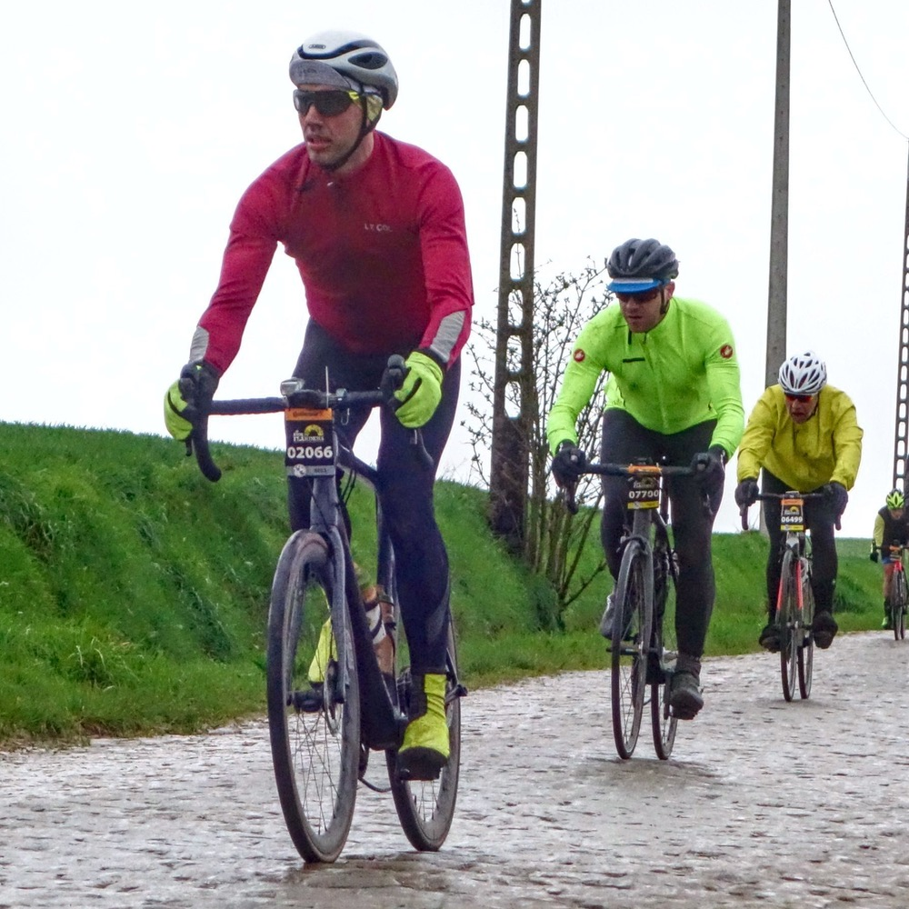
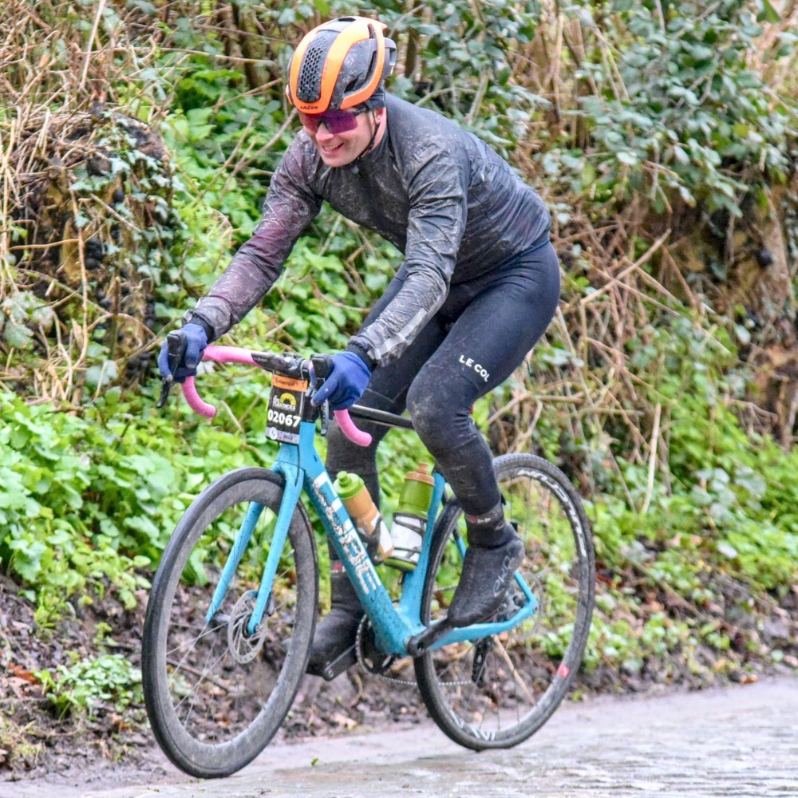
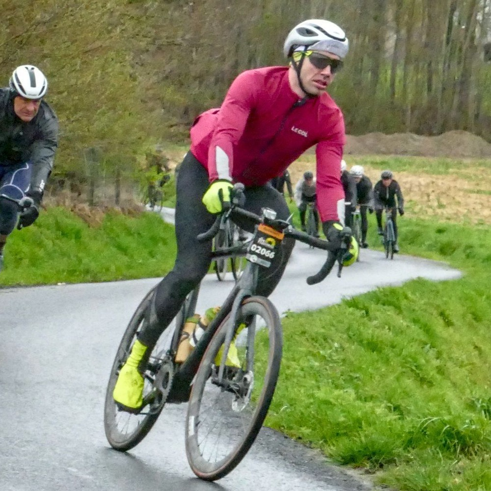
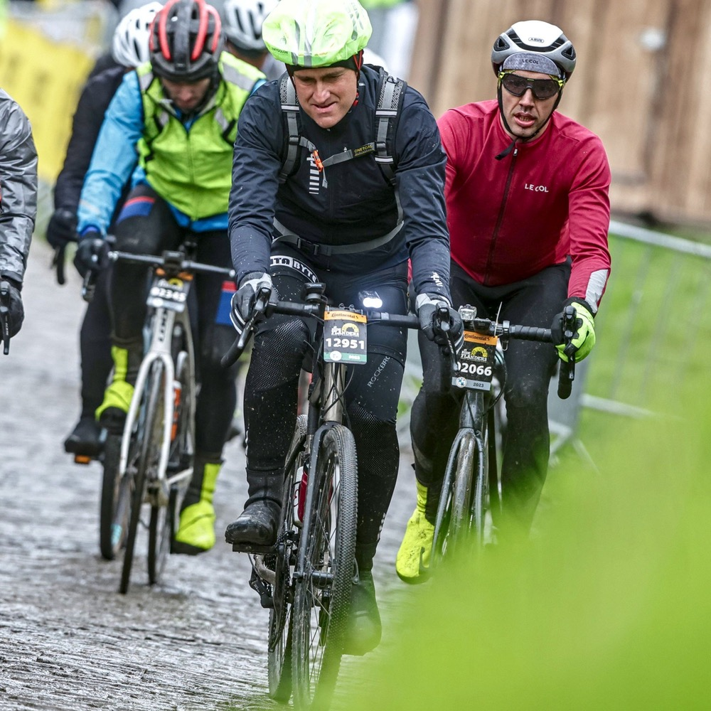
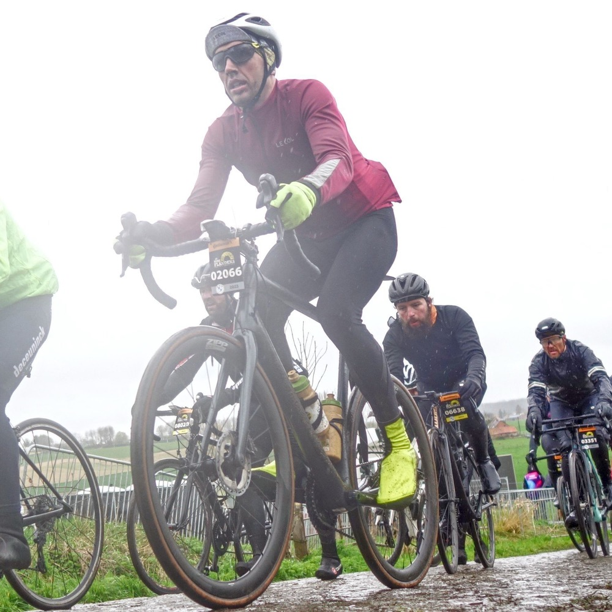
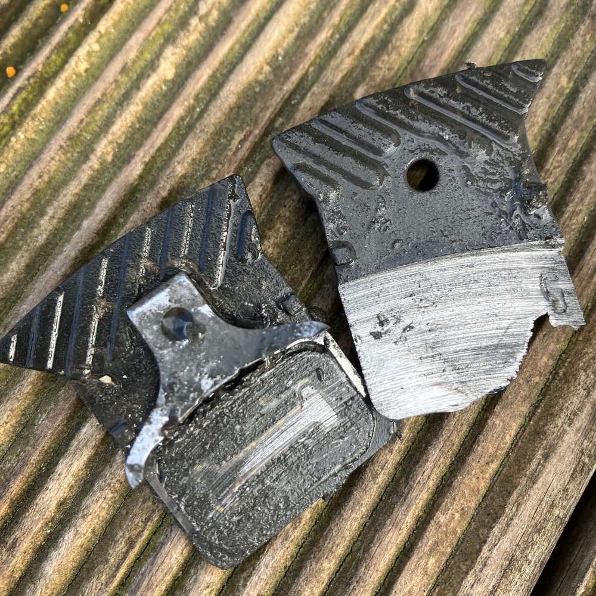

Es gehört schon eine gewisse Portion Überheblichkeit dazu, davon auszugehen Anfang April bei einer Massenveranstaltung Spaß auf dem Rennrad zu haben. Vielleicht auch die Hoffnung auf einen sonnigen lauwarmen Frühlingstag. Aber machen wir uns nichts vor. Die Hellingen der flämischen Ardennen im Duft blühender Osterglocken hinauf zu fahren würde sich doch irgendwie anfühlen als ob man geschummelt hätte.
Natürlich kam alles ganz anders. Schon am Anreisetag schüttet es wie aus Eimern. Den Weg vom Parkhaus zum Hotel und danach zum Abendessen können wir noch einigermaßen trocken bestreiten. Die Pommes zum Nachtisch werden leider nass. Auch unsere Gastgeber am Markt von Brügge warnen uns vor dem glitschigen Kopfsteinpflaster am Koppenberg. Immerhin, bei 5-7 °C erwartet uns kein Schnee und kein Glatteis auf den 250km nach Oudenaarde. Und der Wind kommt von hinten – auf den ersten 120 km.
so heißt die Veranstaltung. Etwas erstaunt stellen wir fest, dass wir uns nach dem Start in Brügge sehr schnell im fließenden Morgenverkehr rund um die Stadt wiederfinden. Das ist kein Rennen sondern eher eine RTF. Zwischendurch ist den Teilnehmern nicht klar, ob sie auf der Straße oder dem (viel zu engen) Radweg besser aufgehoben sind. Es regnet. Natürlich. Das Wasser kommt in den engen Gruppen aus allen Richtungen. Das Tempo ist mäßig, immerhin fahren alle zivilisiert auf der fast 100km langen Anfahrt bis zu den ersten Hellingen.
Abgesehen von einer kleinen Welle nach ca. 70 km geht es flach in Richtung Südosten bis zur Mur van Gerardsbergen. An einem der berühmten Anstiege der Ronde stehen schon morgens viele Zuschauer. Sie bekommen Rennfahrer zu sehen, die mit viel Mühe die Traktion ihres Hinterrads auf glitschigem groben Pflaster zu halten versuchen. 32 mm Contis mit 2,8 bar waren offensichtlich keine ganz schlechte Wahl. Kurz hinter dem höchsten Punkt gibt es belgische Waffeln. Mein favorisierter Snack für den Tag. Wir halten die Pause kurz. Jede Sekunde länger lässt die Temperatur der Kleidung sinken und die durchnässten Klamotten halten nur noch warm, wenn der Körper ausreichend Wärme produziert.
Nach einigen Pavées, noch mehr Hellingen und einer Durchfahrt durch eine 50 cm tiefe "Pfütze" passieren wir den Zielort Oudenaarde an einer Verpflegungsstation. "Koppenberg, extreme slippery, use the deviation" steht auf einer Videotafel auf der Rennradler zu Fuß zu sehen sind. Wir fahren trotzdem hin und stehen in der Schlange. Blockabfertigung. Nach einigen kalten Minuten Wartezeit geht es auch für uns los. Im Sattel bleiben ist das Ziel. Im steilsten Stück des Koppenberg rinnt bei 17% Steigung matschige Brühe durch die Ritzen und über das Pflaster. Es läuft gut. Bis vor uns ein abgestiegener Radler die verbliebene Fahrspur versperrt. Ich rette mich an den Rand um die hinter mir fahrenden passieren zu lassen. Für mich beginnt der Fußmarsch kurz hinter dem steilsten Stück. Kurz vor dem "Gipfelphoto" kann ich mithilfe eines Absperrgitters wieder aufs Rad. Immerhin ist mein Versagen nicht dokumentiert.
 An den beiden nächsten berühmten Anstiegen sieht es nicht viel besser aus. Der Kwaaremont hat immerhin nicht die krassen Steigungsprozente wie der Koppenberg und das Wasser kann seitlich abfließen. Eng ist es trotzdem und so langsam fangen wir an über das Abendessen nachzudenken.
Ohne Zwischenfälle geht es den ruckeligen Anstieg hinauf. An den Seiten die Tribünen, die für das Spektakel am folgenden Tag aufgebaut sind. Und nach der zweiten Welle des Hügels dann die Gewissheit: Der Paterberg ist nicht mehr weit und damit der letzte Anstieg des Tages.
Nach der kurzen Abfahrt vom Kwaaremont geht es also noch mal ans eingemachte. Der Paterberg ist zwar nicht besonders lang, steht aber in Sachen Steigung und Pflaster dem Koppenberg in nicht nach. Quälend langsam rattert das Hinterrad über das leicht stufig gesetzte Pflaster und bewegt sich hier und da mehr zur Seite, als dass es Vortrieb erzeugt. Diesmal gelingt der Slalom um die Fußgänger und so langsam wächst die Freude darüber so einen Höllentag überstanden zu haben.Das Glück am Ende haben wir uns verdient. Nach der Abfahrt am Koppenberg finden wir uns im Windschatten eines ca. 2m großen Mitstreiters, der die letzten Kilometer mit geschätzen 350W locker flockig vor uns her rollt. Hin und wieder überholen wir noch einzelne Fahrer, hin und wieder rollt eine kleine Gruppe an uns vorbei. Wir sehen das Ziel. Wir rollen durch. Der viele Regen hat die Menschen schon von der Strecke verjagt. Es ist ruhig in Oudenaarde…
Was soll man sagen. Wir hatten ein günstiges und ausgezeichnetes Hotel direkt am Markt in Brügge. Der Start war nur 1 min. entfernt. Nun waren wir aber in Oudenaarde angekommen. Kein Problem, dachten wir uns noch am Morgen, die 50 km fahren wir einfach zurück.
Eine fatale Fehleinschätzung. Die Rucksäcke lassen wir zu Hause, dachten wir uns, die stören nur auf der Rückfahrt. Und so sitzen wir nun da. Immer hin mit Dach über dem Kopf. Aber ohne trockene Klamotten. Es dauert 3 Stunden bis der Bus zurück nach Brügge fährt. Das Finisher T-Shirt ist meine Rettung. Es bietet zumindest etwas Schutz vor dem Wind der durch die immer noch feuchten Anziehsachen zieht. Der Regen hat nachgelassen. Immerhin.
So kommen wir dann gegen 22:00 Uhr, nass, dreckig und glücklich in Brügge an. Das Hotelpersonal empfängt uns und ist erstaunt darüber, dass wir tatsächlich die ganze Runde gefahren sind. Nach einer notdürftigen Fahrradwäsche gibt es Abendessen.
Am nächsten Morgen wird dann das komplette Desaster für das Material sichtbar. Bremsbeläge, die eigentlich noch für 1500 km gut waren hat es in der Mischung aus Wasser, Sand und Schlamm bis auf die Grundplatte zerlegt. Der Sand ist in alle Ritzen des Fahrrads eingedrungen. Ganz schön viel Aufwand, für eine kleine Runde durch Belgien…